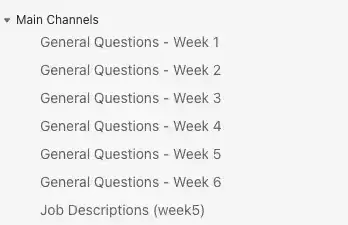

WDD231 Student Outreach
Block begins on
Student outreach includes any work you do to build relationships with students, help clarify course content and assignment expectations, and encourage students to persist and do their best in the class. Though some additional instruction may be given by week or course, student outreach assignments generally fall into the following categories:
- Non-participating and Failing Students - In the initial weeks of a course, and at key times surrounding academic deadlines, you should reach out to students who are in danger of failing the course due to either low participation or failing grades. Message templates are provided in relevant weeks to assist you in reaching out to this student group.
- Missing Assignments - Starting in Week 02, you should reach out to any students in your class who are missing high-stakes assessments. Specific assessments will be identified in your course-specific outreach tasks.
- At-Risk Students - Some students may not be missing a high-stakes assessment, but they could use additional instructor help because they have received a lower grade on the assessment. Starting in Week 02, you will be asked to reach out to students who have scored low on a high-stakes assessment with an eye toward tutoring the student on specific concepts that could help them succeed. You may also allow students in this group to resubmit their assignment.
- Positive Outreach - Part of good student outreach is not just focusing on students who may need additional help, but building relationships and presence with those who are already succeeding. Besides reaching out to students who are missing or scoring low on key assessments, you will also be prompted to reach out to students who have scored highly, recognizing their good work.
- Additional Feedback on Course Content - Depending on the course, you may be asked to review certain assignments in order to give individual students or student groups additional feedback on key concepts so they can succeed in future assignments.
- Inspired Outreach - As an instructor in your course, pray for your students. You may receive additional inspiration and guidance on other ways you can positively influence and encourage the students in your class.
Communication Channels: When communicating with students one-on-one, use MS Teams.
When sending group outreach messages for assignment progress, use Canvas Gradebook.
Before Class Begins -
Send an Email
Modify the following message and then email it to all students using Canvas Inbox.
SUBJECT: Welcome to WDD231, the best class ever!
What a fantastic opportunity to work with students from around the world who share a common faith.
Class begins on , and we must hit the ground running.
Canvas should be open now if you want to get started early. No Pressure here.üòÉ
You need to dedicate many hours per week to master these concepts. If you don't have that kind of time, you may want to take the class later when you can devote enough time to be successful.
You will be using VS Code to create all your assignments and then hosting them on GitHub. Both are tools used by professionals in the field.
We will be using MS Teams for communication and teamwork, so ensure you have it installed and ready to go.
It's going to be a fantastic and fast-paced ride for the next few weeks, so take your vitamin pills, and let's get started.
If you find yourself overwhelmed within the first week, you can drop the class using these instructions.
https://byui-help.screenstepslive.com/a/884683-how-to-withdraw-from-class
Bro/Sister Smith
Post your version of the following message to Canvas Announcements
SUBJECT: Welcome to Class
Thanks for joining us for another block class to learn about web front-end development.
We will use MS Teams for announcements, group communication, and direct questions between students and teachers. I will check messages every day.
I will NOT be posting any further announcements in Canvas. üòÑ
Bro/Sister Smith
Connect Teams and Canvas
Open Canvas, select settings, click the "Intergrations" tab and activate Microsoft Sync. Click the "Sync Now" button. W A I T.

Sort the Canvas Gradebook
While your waiting, sort the Canvas gradebok, it makes finding the current assignent much easier. Open your course in Canvas and choose the "Grades". Select the gear in the upper right corner.

Activate your class in MS Teams
Once the sync process has finished, you will have a new Teams for your new class. You need to activate the class and let the students in.


Post a message in Teams
Post a message NOT to use the "General Channel". When we get over 100 people talking over 6 weeks, this becomes a mess.ü§™

Change the Teams Inforamtion
- Select the Teams icon on the left panel.
- Click the new WDD231 team in your list.
- To the right of the team name, select the … and choose "Manage team" from the drop down menu
- Click the Settings tab. Then expand "Team details" section.
- Update the team name to include WDD231 and Block 1 or Block 2 (as appropiate)
- Click the "Change picture" link and select "Upload" to choose a new image from your files.
- Remember to save.
- NOTE: you may need to wait till after class has started to make the icon change.
Here are my icons if you want to use them for the first block and the second block.
Add Five standard MS Teams channels for the weekly discussions
Add a class channel for each week for class discussions "General Questions - Week 1" etc.
Select "Standard" channel

Add an additional channel called "Job Descriptions (week5).
There will be an assignment later that has student sharing job descriptions they have found.
Add many more public Channels to Teams for Groupwork
Add a new channel in MS teams that exactly matches the names of the People>WDD231Groups in canvas (takes about 10 minutes)

Weekly Hints
If you have advice, tips, or hints for a specific week then post them to the General Questions for the related week. Hopefully this will encourage students to use these weekly channels for classwide communication.
Pre-term Checklist
You will get an email link this week for the preterm checlkist. Please review and submit it.
Useful Tips
What Section do I have?
In Canvas, open Settings and choose "Sections" from the top tab navigation. Your section will be listed.
Modify Due Date for One Student
On rare occasions students may have personal challenges and need an extension beyond the two week already provided. In these cases you can modify the "Until" date for a sungle student as follows.
- Open an assignment is Canvas
- Click the Edit button
- Scroll to the bottom and choose "Assign Access" Manage Assign To
- Click +Add
- Add the student to the "Assign to" box
- Match the due date
- Change the Until date to add a few days.
Submission Comments
The grading team will respond to the majority of comments left with assignment submissions. When these comments should be addressed by the course instructor, the graders are susposed to notify you. You can view all of these submission comments in one place as shown below.

Checking the Pulse of the class.
Every week there are a set of questions labeled as "W0x Ponder: 60-second Status Update". You can see how much time students are spending (self reported), what went well, and what they are struggling with.
Open the weekly survey and click "Survey Statistics".

Some questions will summarize responses.

For questions that are fill in the blank, you will need to click "Student Analysis" to generate and then download a report of all student responses.


Notification of Disability Accommodations
On occasion you may get a request for disability accommodations for this class. Most of the requested items like extra time on quizzes and deadline extensions are already built into this course.
If you find a request for "Group Work Modification” as shown above, please send the student a personalized version of the following message.
Your Accessibility Services letter indicates that you are exempt from group work. If you are able to participate in your group, that would be a good learning experience but you are not required to do so. There are questions every week about your participation in a group. Please answer them in the affirmative so you don't miss any points.
Bro/Sister Smith
WEEK 01 Outreach -
MS Teams: On Monday, post the following Announcement to the "General Questions - Week 1" discussion.
SUBJECT: Week 1: Group Work
This week, you will NOT have a one-hour group meeting to attend. Instead, you can just introduce yourself to your new group of friends.
Asynchronously work with the course via the MS Teams channel to meet this week's requirements on building your course portal home page. You could share your page link with the other members of your group. If you have any questions, please post them in the appropriate weekly discussion channel of MS Teams.
Slow Starting: Towards the end of the week, open the "Grades" tab on the left side. From the "W01 Setup: Technology Stack" column, select the three dots and choose "Message Students Who". Then select 'Have not submitted...' and send a personalized version of the following message.
SUBJECT: Group Signup
One of your first assignments is to pick a group in Canvas and then sign up for the same group in MS Teams. You then introduce yourself to the rest of the group members in MS Teams. You will NOT have a meeting the first week. While many students have completed this task, there are still several who have not. Please try to complete this assignment by the end of the day.
Bro/Sis Smith
No Submission for Course Home Page: Towards the end of the week open Canvas, choose Grades and select "W01 Activity: Course Home Page" assignment. Choose "Message Students Who" > Have not yet submitted. Send a personalized version of the following message:
SUBJECT: Course Home Page Progress
I noticed that you have not yet submitted your course home page on GitHub. I know it's not due yet, but I wanted to see how you're doing with the assignment.
If you need a review from the previous class (sometimes we forget stuff üòú), here is a link with four tutorials that may be helpful.
https://byui-cse.github.io/wdd130-ww-course/week01/
- Editing Code: Visual Studio Code
- Testing: Web Developer Browser Extension
- Hosting Your Work: GitHub Account
- Uploading: Installing Git
Bro/Sis Smith
Non-participating Students: Towards the end of the week, message students who have not yet submitted the "W01 Setup: Technology Stack". Inform them that this is a 7-week course, and remind them of the upcoming registration deadline. Send a personalized version of the following message:
SUBJECT: Checking In
I noticed you haven't turned in the first assignment. This course is only seven weeks long and ends on . To succeed in this block, it will be important for you to get started as soon as you can. Is there something that might be keeping you from getting started in this class? Please email me so we can work together to help you have a successful experience.
If you do not intend to participate in this course this term, I recommend that you drop the course before the registration deadline on . If you drop before then, you will receive a full tuition refund. If you choose to drop the class after the registration deadline, you will not be able to receive a tuition refund unless you withdraw from all your courses this term.
I look forward to hearing from you and hope you have a successful experience!
Bro/Sister Smith
Instructor-initiated Drops: According to According to BYU-Idaho's Instructor-initiated Drop Policy, you may request to drop any students who have not participated in your class by the start of Lesson 02. You initiate the drop process by submitting a form distributed by the Registrar's Office or contacting registration office. If you choose to drop students, please make sure you have send a couple of emails letting them know the consequences of not participating. It's hard to undrop them if they suddenly show an interest in class, but it is possible.
All Week: Keep checking MS Teams and your email and respond to any questions that have been posted.
Report your week 1 outreach by midnight on
Best Practice: As you monitor late adds in your class, you may find it helpful to copy the names of the students you email in your initial welcome email and put them into a spreadsheet. This will help you spot changes in your students when you compare the initial outreach to your updated contact list.
WEEK 02 Outreach -
MS Teams: On Monday, post this announcement to Canvas or Teams.
SUBJECT: Week 2: Looking forward to this module.
This week will be fast and furious as you learn to build you own JSON data file and then import it using fetch. It's a powerful skill to have on your resume. You should have some fun when you learn to animate your small screen navigation using CSS Grid and transitions. It's pretty cool. ü•∞ If you have any questions, please post them in the appropriate weekly discussion channel of MS Teams.
Group of One: On Monday, go to Canvas and review the People > WDD231Groups and identify all students in a group of one. Return to Canvas and using the Inbox > Compose a New Message send a message to this list of single group students.
SUBJECT: Selecting a new group
You appear to be the only student who signed up for your group time. ü§™ To complete the group activities each week, you must join another group. Please go back to Canvas and add yourself to a different group, and then go to Teams and introduce yourself to your new group.
You must attend a group meeting this week, so do this today if possible.
Bro/Sister Smith
No Group: On Monday, go to Canvas and review the People > WDD231Groups and identify all students who have not signed up for a group. Return to Canvas and using the Inbox > Compose a New Message send a message to this list of students.
SUBJECT: Selecting a group
One of your first assignments for last week was to pick a group in Canvas and then sign up for the same group in MS Teams. I see that you have not yet signed up for a Canvas group.ü•≤ Please try to complete this assignment by the end of the day.
Bro/Sister Smith
Late Work: On Tuesday, select the W01 Assignment: Course Home Page in the gradebook and message students who have not submitted the assignment. Send a personalized version of the following email.
SUBJECT: Missing the Week 1 Course Home Page Development
I noticed you have not turned in the first assignment. Because the course is only seven weeks long, to succeed, it will be vital for you to be engaged in this course every week. Is there something that might be keeping you from engaging in this class? Please email me so we can work together to help you have a successful term.üòä
If you do not intend to participate in this course this term, I recommend that you drop the course before the drop deadline on . Depending on your situation, you may be able to receive a prorated tuition refund. If you choose to drop the class after the drop deadline, you will receive a "W" grade on your transcript for this course.
Were you able to work through all the Learning Activities for last week?
I look forward to hearing from you and hope you have a successful experience!
Bro/Sister Smith
All Week: Keep checking MS Teams and your email and respond to any questions that have been posted.
Positive Outreach: On Thursday, identify students who scored more than 24/30 on W01 Assignment: Course Home Page and send them a message congratulating them on their work.
SUBJECT: Good work on your Home Page
I see that you have done well on the Home Page from last week. Keep up the good work.
Do you ever find yourself without power or internet access when trying to work on this class?
Bro/Sister Smith
Report your week 2 outreach by midnight on
WEEK 03 Outreach -
MS Teams: On Monday, post this announcement to Canvas or Teams.
SUBJECT: Week 3: Playing with the Big Boys Now
This week you get to interact with a professional level weather API and report dynamic data on your very own website. Another really great skill for your portfolio toolbox. If you have any questions, please post them in the appropriate weekly discussion channel of MS Teams.
Late Work: On Monday, select the W02 Assignment: Chamber Directory Page in the gradebook and message students who have not submitted the assignment. Send a personalized version of the following email.
SUBJECT: Missing your W02 Assignment: Chamber Directory Page
I noticed that you have not yet submitted last week's Chamber Directory Page. Remember that it's not too late! Your assignment will be graded without a late penalty so please get it in as soon as you can.
Do you ever find yourself without power or internet access when trying to work on this class?
Bro/Sister Smith
Group Check: On Monday, go back into Canvas > People > WDD231Groups tab and note the students who are still not signed up for a group. Then look at the grades tab and see which ones have participated and which have not.
Send one of the following messages to each student using the envelope as shown below (green arrow).
SUBJECT: Submitting assignments but no group yet.
I see you have been submitting assignments for class but you have not joined a Canvas group yet.
Did you join a Teams group but forget to also join the same group in Canvas?
Did you forget to sign up for a group for this class?
Is there something I can help with?
SUBJECT: Not signed up for a group.
I see that you have not submitted any assignments for class and you have not joined a group yet. Are you going to continue with this class or are you planning to drop?
All Week: Keep checking MS Teams and your email and respond to any questions that have been posted.
Wednesday: Open module 2 and find the "W02 Ponder: 60-second Status Update". Download the student submissions.
- Click the quiz in the module.
- Select "Survey Statistics" in the top right corner.
- Click the "Student Analysis" button to generate a report.
- A .csv file should be downloaded to your computer.
See if there are any trends in the submissions that need to be looked at.
Positive Outreach: On Thursday, identify students who scored more than 24/30 on "W02 Assignment: Chamber Directory Page" and send them a message congratulating them on their work.
SUBJECT: Congratulations on your directory page
I see that you have done well on the Directory Page from last week.
Have you had opportunities to help out members of your team? üòÅ
Bro/Sister Smith
Group: On Friday, send a message to ALL students.
SUBJECT: Group Functionality
Is your group functioning? If you need to change groups, please let me know.
Bro/Sister Smith
Report your week 3 outreach by midnight on
WEEK 04 Outreach -
MS Teams: On Monday, post this announcement to Canvas or Teams.
SUBJECT: Week 4: More tools for your toolbox
This week you get to implement and design an HTML5 popup modal. We will also take it to the next level with dymanivally creating these modals using JavaScript. Before you go, we also have an enhancment to building a form (you learned this in WDD131). We are going to grab data from a URL string and display it onto a web page. üòä If you have any questions, please post them in the appropriate weekly discussion channel of MS Teams.
Late Work: On Monday, select the W03 Assignment: Chamber Home Page in the gradebook and message students who have not submitted the assignment. Send a personalized version of the following email.
SUBJECT: Missing your Chamber Home Page
I noticed that you have not yet submitted last week's home page assignment. Please don't give up because you can still turn it in. There is no late penalty.
Has your team been able to assist you with this week's assignment?
Bro/Sister Smith
All Week: Keep checking MS Teams and your email and respond to any questions that have been posted.
Positive Outreach: On Thursday, identify students who scored more than 16/20 on W03 Assignment: Chamber Home Page and send them a message congratulating them on their work.
SUBJECT: Congratulations on your Chamber home page
I see that you have done well on the Chamber home Page assignment from last week.
There are several videos in this class, do you ever turn on the captions [CC] while you watch?
Bro/Sister Smith
WITHDRAWAL DEADLINE: On Saturday, select the "W03 Team Activity: Home Page—Responsive Images" in the gradebook and message students who have not submitted the assignment. Send a personalized version of the following email.
SUBJECT: WITHDRAWAL DEADLINE
The deadline to withdraw from this block course and receive a "W" grade and not a letter grade is coming up really soon. So, if you think you may not be able to complete the course with a grade you want, you may want to drop the class today.
Bro/Sister Smith
Report your week 4 outreach by midnight on
WEEK 05 Outreach -
MS Teams: On Monday, post this announcement to Canvas or Teams.
SUBJECT: Week 5: Finishing up the Chamber Page
Were getting close to the end so hang on and keep taking your vitiman pills. This week you get to build a new page for your chamber web site that allows people to discover your home town. So be proud of your town and show us some cool things about where you live. If you have any questions, please post them in the appropriate weekly discussion channel of MS Teams. If you have any questions, please post them in the appropriate weekly discussion channel of MS Teams.
Late Work: On Monday, select the W04 Assignment: Chamber Join Page in the gradebook and message students who have not submitted the assignment. Send a personalized version of the following email.
SUBJECT: Missing the join page from last week
I noticed that you have not yet submitted last week's web form assignment on your GitHub home page. As you know, you can still turn it in but we are getting close to the end of the semester.
There are several videos in this class, do you ever turn on the captions [CC] while you watch?
Bro/Sister Smith
All Week: Keep checking MS Teams and your email and respond to any questions that have been posted.
Positive Outreach: On Thursday, identify students who scored more than 25/30 on W04 Assignment: Chamber Join Page and send them a message congratulating them on their work.
SUBJECT: Congratulations on completing the join form on your Chamber site.
I see that you have successfully completed the Join Page for the Chamber of Commerce assignment from last week.
Was your team able to meet this week?
Bro/Sister Smith
Report your week 5 outreach by midnight on
WEEK 06 Outreach -
MS Teams: On Monday, post this announcement to Canvas or Teams.
SUBJECT: Week 6: The beginning of the end of this class.
The final assessment for this class is a multiple-page website, and the best part is that you get to choose the topic.
Last week, you picked the topic and submitted a project site plan as a single web page.
This week, you are creating that site! As Elder Uchtdorf shared, "The desire to create is one of the deepest yearnings of the human soul"
This website will show everything you have learned in this and previous classes for this certificate.
As you may have noticed, there is no teamwork allowed for this project, you on your own.üòá
You will create a new repository inside your WDD231 account and host all the files there.
My friends, working with you during this class has been a great experience; I wish you the best as you create something extraordinary.
Late Work: On Monday, select the W05 Assignment: Chamber Discover Page in the gradebook and message students who have not submitted the assignment. Send a personalized version of the following email.
SUBJECT: Missing last weeks discover page
I noticed that you have not yet submitted last week's discover page on your Chamber Site. As you know, you can still turn it in without late penalties.
Was your team able to meet this week?
Bro/Sister Smith
All Week: Keep checking MS Teams and your email and respond to any questions that have been posted.
Positive Outreach: On Thursday, identify students who scored more than 25/30 on W05 Assignment: Chamber Discover Page and send them a message congratulating them on their work.
SUBJECT: Congratulations on doing well on the Chamber Discover page.
I see that you did a great job on your chamber discover assignment from last week.
How has this course helped you become a better web developer?
Bro/Sister Smith
Report your week 6 outreach by midnight on
WEEK 07 Outreach -
MS Teams: On Monday, post this announcement to Canvas or Teams.
SUBJECT: Final Exam
This week is the big exam so I will just go over here and wait quietly till you are done. Good Luck üòä
On Monday, send the following message to ALL students in the course. Use the Canvas InBox > Compose a New Message > to all in this class.

SUBJECT: Class ends very soon
This awesome WDD231 block class will close on at midnight. You must have ALL your assignments submitted by then. The most important submission is your finished Individual Website Project. If you have late submissions from units 5 and 6, make sure to resubmit those before class ends as well. Remember you have three opportunities for a regrade.
Have you taken the opportunity to pray for the Holy Ghost to help you with any part of your assignment this week?
Bro/SisterSmith
Positive Outreach: On Wednesday, identify students who scored more than 0.5 on the "W07 End-of-Course Evaluation" and send them a message thanking them for their feedback.
SUBJECT: Providing Feedback
Thanks for taking the time to complete the end-of-course evaluation. We are constantly looking for ways to improve the course and your feedback is important.
Report your week 7 outreach by midnight on